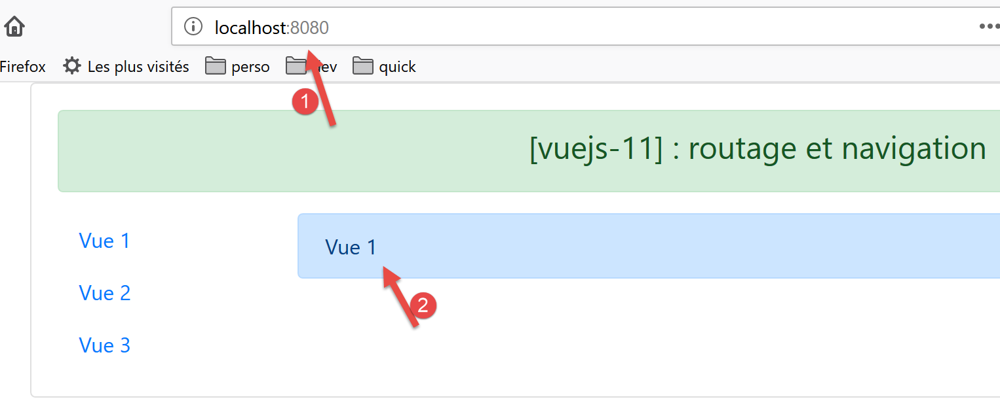
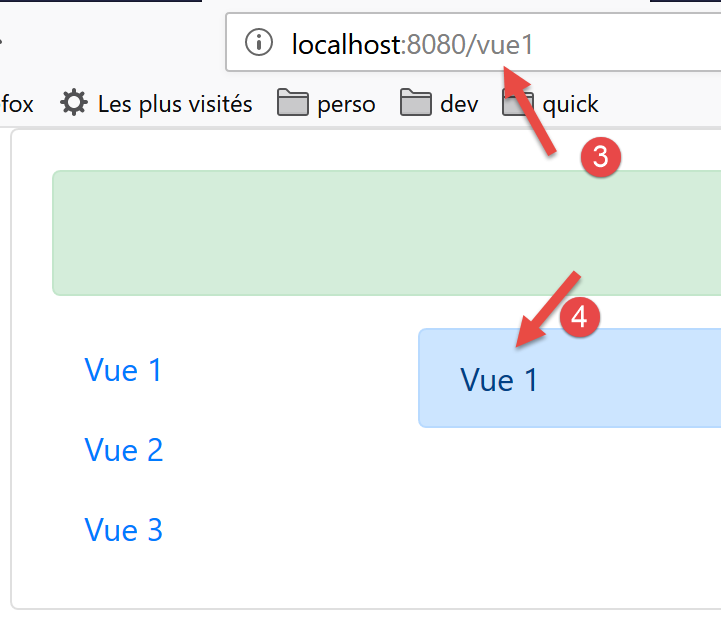

13. Projekt [vuejs-11]: Routing und Navigation
Die Routing-Funktionalität ermöglicht es dem Benutzer, zwischen den verschiedenen Seiten der Anwendung zu navigieren.
Die Projektstruktur sieht wie folgt aus:

13.1. Installation der Abhängigkeiten
Für die Routing-Funktionalität in [Vue.js] ist die Abhängigkeit [vue-router] erforderlich:

- In [1-3] wird die Abhängigkeit [vue-router] installiert;
- in [4-6] wurde nach der Installation der Abhängigkeit die Datei [package.json] geändert;
13.2. Das Routing-Skript [router.js]
Die Navigationsregeln der Anwendung sind in der Datei [router.js] gespeichert (der Name des Skripts kann beliebig sein):
// Für das Routing erforderliche Importe
import Vue from 'vue'
import VueRouter from 'vue-router'
// Routing-Plugin
Vue.use(VueRouter)
// Zielkomponenten des Routings
import Component1 from './components/Component1.vue'
import Component2 from './components/Component2.vue'
import Component3 from './components/Component3.vue'
// Routen der Anwendung
const routes = [
// Startseite
{ path: '/', name: 'home', component: Component1 },
// Komponente1
{
path: '/vue1', name: 'vue1', component: Component1
},
{
// Komponente2
path: '/vue2', name: 'vue2', component: Component2
},
// Komponente3
{
path: '/vue3', name: 'vue3', component: Component3
},
]
// der Router
const router = new VueRouter({
routes,
mode: 'history',
})
// Export des Routers
export default router
Anmerkungen
- Das Skript [router.js] legt die Routing-Regeln unserer Anwendung fest;
- Zeilen 1–6: Aktivierung des für das Routing erforderlichen Plugins [vue-router]. Diese Aktivierung erfordert den Import der Klasse/Funktion [Vue] (Zeile 2) sowie des Routing-Plugins (Zeile 3). Dieses Plugin wurde zusammen mit der Abhängigkeit [router] installiert, die wir gerade installiert haben;
- Zeilen 8–11: Import der Zielansichten für das Routing;
- Zeilen 15–21: Definition des Routing-Arrays. Jedes Element dieses Arrays ist ein Objekt mit den folgenden Eigenschaften:
- [path]: die URL der Ansicht, die im Feld [URL] des Browsers angezeigt werden soll. Hier kann man beliebige Angaben machen;
- [name]: der Name der Route. Auch hier kann man beliebige Angaben machen;
- [component]: Die Komponente, die die Ansicht anzeigt. Hier muss es sich zwingend um eine vorhandene Komponente handeln;
Wir haben hier also vier Routen [/, /vue1, /vue2, /vue3].
- Zeilen 33–36: Der Router ist eine Instanz der Klasse [VueRouter], die in Zeile 3 importiert wurde. Der Konstruktor von [VueRouter] wird hier mit zwei Parametern verwendet:
- die Routen der Anwendung;
- ein Modus zum Schreiben der URL in den Browser: Der Standardmodus [hash] schreibt die URL in der Form [localhost:8080/#/vue1] (wobei # das Hash-Zeichen ist). Der Modus [history] entfernt das # [localhost:8080/vue1];
- Zeile 39: Der Router wird exportiert;
13.3. Das Hauptskript [main.js]
Das Hauptskript [main.js] lautet wie folgt:
// Importe
import Vue from 'vue'
import App from './App.vue'
// Plugins
import BootstrapVue from 'bootstrap-vue'
Vue.use(BootstrapVue);
// Bootstrap
import 'bootstrap/dist/css/bootstrap.css'
import 'bootstrap-vue/dist/bootstrap-vue.css'
// Router
import monRouteur from './router'
// Konfiguration
Vue.config.productionTip = false
// Projektinstanziierung [App]
new Vue({
name: "app",
// Hauptansicht
render: h => h(App),
// Router
router: monRouteur,
}).$mount('#App')
Kommentare
- Zeile 14: Der vom Skript [router.js] exportierte Router wird importiert;
- Zeile 25: Dieser Router wurde als Parameter an den Klassenkonstruktor der Klasse [Vue] übergeben, der die Hauptansicht [App] anzeigt, die der Eigenschaft [router] der Ansicht zugeordnet ist;
13.4. Die Hauptansicht [App]
Der Code der Hauptansicht lautet wie folgt:
<template>
<div class="container">
<b-card>
<!-- eine Nachricht -->
<b-alert show variant="success" align="center">
<h4>[vuejs-11] : routage et navigation</h4>
</b-alert>
<!-- die aktuelle Routing-Ansicht -->
<router-view />
</b-card>
</div>
</template>
<script>
export default {
name: "app"
};
</script>
Kommentare
- Zeile 9: Zeigt die aktuelle Routing-Ansicht an. Das Tag <router-view> wird nur erkannt, wenn die Eigenschaft [router] der Ansicht initialisiert wurde;
13.5. Das Layout der Ansichten
Das Layout der Ansichten wird durch die folgende Komponente [Layout] gewährleistet:
<template>
<!-- Zeile -->
<div>
<b-row>
<!-- dreispaltiger Bereich -->
<b-col cols="2" v-if="left">
<slot name="left" />
</b-col>
<!-- neunsäuliger Bereich -->
<b-col cols="10" v-if="right">
<slot name="right" />
</b-col>
</b-row>
</div>
</template>
<script>
export default {
// Einstellungen
props: {
left: {
type: Boolean
},
right: {
type: Boolean
}
}
};
</script>
Wir haben dieses Layout bereits im Projekt [vuejs-06] im Abschnitt [vuejs-06] verwendet und erläutert.
13.6. Die Navigationskomponente
Die Komponente [Navigation] bietet dem Benutzer ein Navigationsmenü:

Die Komponente, die den Block [1] generiert, lautet wie folgt:
<template>
<!-- Bootstrap-Menü mit drei Optionen -->
<b-nav vertical>
<b-nav-item to="/vue1" exact exact-active-class="active">Vue 1</b-nav-item>
<b-nav-item to="/vue2" exact exact-active-class="active">Vue 2</b-nav-item>
<b-nav-item to="/vue3" exact exact-active-class="active">Vue 3</b-nav-item>
</b-nav>
</template>
- Dieser Code generiert den ersten von drei Blöcken mit Links zur Navigation;
- Das Attribut [to] der Tags <b-nav-item> muss mit einer der Eigenschaften [path] der Routen des Anwendungsrouters übereinstimmen;
13.7. Die Ansichten
Ansicht Nr. 1 lautet wie folgt:

Die Bereiche [3-4] werden von der folgenden Komponente [Component1] generiert:
<template>
<Layout :left="true" :right="true">
<!-- Navigation -->
<Navigation slot="left" />
<!-- Meldung-->
<b-alert show variant="primary" slot="right">Vue 1</b-alert>
</Layout>
</template>
<script>
import Navigation from './Navigation';
import Layout from './Layout';
export default {
name: "component1",
// verwendete Komponenten
components: {
Layout, Navigation
}
};
</script>
Anmerkungen
- Zeile 2: Ansicht Nr. 1 verwendet das Layout der Komponente [Layout], das aus zwei Slots namens [left, right] besteht;
- Zeile 4: Das Navigationsmenü wird im linken Slot platziert. Dies ist der Bereich [3], der oben zu sehen ist;
- Zeile 6: Im rechten Slot wird eine Meldung platziert. Dies ist der Bereich [4], der oben zu sehen ist;
Die Ansichten 2 und 3 sind analog.
Ansicht Nr. 2, angezeigt von der Komponente [Component2]:
<!-- Ansicht Nr. 2 -->
<template>
<Layout :left="true" :right="true">
<!-- Navigation -->
<Navigation slot="left" />
<!-- Meldung -->
<b-alert show variant="secondary" slot="right">Vue 2</b-alert>
</Layout>
</template>
<script>
import Navigation from './Navigation';
import Layout from './Layout';
export default {
name: "component2",
// Komponenten der Ansicht
components: {
Layout, Navigation
}
};
</script>
Ansicht Nr. 3, angezeigt von der Komponente [Component3]:
<!-- Ansicht Nr. 3 -->
<template>
<Layout :left="true" :right="true">
<!-- Navigation -->
<Navigation slot="left" />
<!-- Meldung -->
<b-alert show variant="info" slot="right">Vue 3</b-alert>
</Layout>
</template>
<script>
import Navigation from "./Navigation";
import Layout from "./Layout";
export default {
name: "component3",
// Ansichtskomponenten
components: {
Layout,
Navigation
}
};
</script>
13.8. Ausführung des Projekts

Bei der Ausführung wird die folgende Ansicht angezeigt:

- In [1] ist URL gleich [http://localhost:8080]. Es wurde also die folgende Routing-Regel ausgeführt:
{ path: '/', name: 'home', component: Component1 }
Es wurde also die Komponente [Component1] angezeigt. Sie zeigt die Ansicht Nr. 1 [2] an. Klicken wir nun auf den Link [Vue 1], dessen Code wie folgt lautet:
<b-nav-item to="/vue1" exact exact-active-class="active">Vue 1</b-nav-item>
Die Anzeige sieht nun wie folgt aus:
- In [3] wurde die folgende Routing-Regel ausgeführt:
path: '/vue1', name: 'vue1', component: Component1
Es wurde also erneut die Komponente [Component1] angezeigt und damit die Ansicht Nr. 1 [4]. Klicken wir nun auf den Link [Vue 2], dessen Code wie folgt lautet:
<b-nav-item to="/vue2" exact exact-active-class="active">Vue 2</b-nav-item>
Die neue Ansicht sieht dann wie folgt aus:

- Bei [5] wurde die folgende Routing-Regel ausgeführt:
path: '/vue2', name: 'vue2', component: Component2
Es wurde also die Komponente [Component2] angezeigt, also Ansicht Nr. 2. Wenn wir nun auf den Link [Vue 3] klicken, dessen Code wie folgt lautet:
<b-nav-item to="/vue3" exact exact-active-class="active">Vue 3</b-nav-item>
erhalten wir die folgende neue Ansicht:

- Bei [6] wurde die folgende Routing-Regel ausgeführt:
path: '/vue3', name: 'vue3', component: Component3
Es wurde also die Komponente [Component3] angezeigt, d. h. die Ansicht Nr. 3 [8].